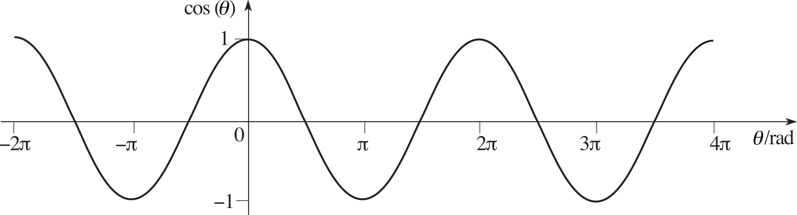

¿Quienes somos?
Juan Sebastián Parada Celis
Estudiante de Ingeniería de sistemas de la Universidad Distrital.Ma. Camila Guerrero Giraldo
Estudiante de Ingeniería de sistemas de la Universidad Distrital.
¿Qué es programación funcional?
¿Qué es un callable?

Funciones puras
Una función pura es una función donde el valor de retorno solo está determinado por sus valores de entrada, sin efectos secundarios observables.
Funciones puras vs Funciones no puras


Funciones convencionales y Lambdas
Las funciones convencionales son los callables más conocidos pues son bloques de código organizado y reutilizable que se usa para realizar una sola acción relacionada. Son las funciones más comunes y de uso cotidiano. Por otro lado las lambdas son funciones muy simples que se pueden escribir en una sola línea con una sintaxis característica.
Una función lambda se escribe de la siguiente manera :
nombre_funcion = lambda argumentos : resultado


Closures e instancias


Función con atributos ligados
Atributos con funciones ligadas
/